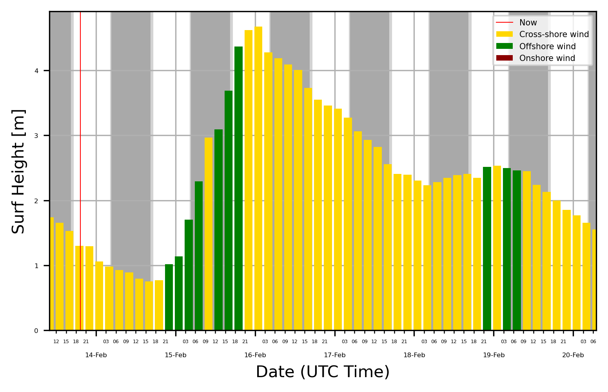

Produce a surf report
[1]:
%load_ext autoreload
%autoreload 2
import matplotlib.pyplot as plt
import matplotlib
import matplotlib.dates as mdates
import datetime
import pandas as pd
from pysurfline import SpotForecast
List of known spot id
Spot Id |
Name |
|---|---|
5842041f4e65fad6a7708890 |
Pipeline (USA) |
584204204e65fad6a7709b09 |
Varazze (ITA) |
[2]:
params={
"spotId":"5842041f4e65fad6a7708890",
"days":7,
"intervalHours":3,
}
spot=SpotForecast(params,verbose=True)
-----
ForecastGetter(Type:wave, Status:200)
-----
ForecastGetter(Type:wind, Status:200)
-----
ForecastGetter(Type:tides, Status:200)
-----
ForecastGetter(Type:weather, Status:200)
[3]:
report=[]
for attr in ["wave","wind","weather"]: #exclude "tides" because of HIGH LOW exact times
report.append(spot.get_dataframe(attr))
report=pd.concat(report,axis=1)
report.head()
[3]:
| utcOffset | surf_min | surf_max | surf_optimalScore | swells | utcOffset | speed | direction | directionType | gust | optimalScore | utcOffset | temperature | condition | |
|---|---|---|---|---|---|---|---|---|---|---|---|---|---|---|
| timestamp | ||||||||||||||
| 2022-02-13 10:00:00 | -10 | 1.555120 | 1.925840 | 0 | [{'height': 1.0067, 'period': 8, 'direction': ... | -10 | 26.17570 | 61.06052 | Cross-shore | 28.44523 | 0 | -10 | 22.56595 | NIGHT_BRIEF_SHOWERS_POSSIBLE |
| 2022-02-13 13:00:00 | -10 | 1.497900 | 1.813900 | 0 | [{'height': 1.09102, 'period': 8, 'direction':... | -10 | 25.13432 | 59.40920 | Cross-shore | 27.72073 | 0 | -10 | 22.27188 | NIGHT_CLEAR |
| 2022-02-13 16:00:00 | -10 | 1.440680 | 1.611960 | 0 | [{'height': 1.18276, 'period': 8, 'direction':... | -10 | 27.02486 | 63.20843 | Cross-shore | 29.17300 | 0 | -10 | 22.22278 | NIGHT_CLEAR |
| 2022-02-13 19:00:00 | -10 | 1.150483 | 1.455083 | 0 | [{'height': 1.34372, 'period': 6, 'direction':... | -10 | 27.23453 | 59.22836 | Cross-shore | 27.23453 | 0 | -10 | 22.54321 | CLEAR |
| 2022-02-13 22:00:00 | -10 | 1.224333 | 1.368333 | 0 | [{'height': 0.97719, 'period': 6, 'direction':... | -10 | 22.07972 | 54.38195 | Cross-shore | 22.07972 | 0 | -10 | 22.72507 | CLEAR |
[4]:
surf=report.copy()[["surf_min", "surf_max","speed","directionType"]]
surf["surf_height"]=surf[["surf_min","surf_max"]].mean(axis=1)
surf.head()
[4]:
| surf_min | surf_max | speed | directionType | surf_height | |
|---|---|---|---|---|---|
| timestamp | |||||
| 2022-02-13 10:00:00 | 1.555120 | 1.925840 | 26.17570 | Cross-shore | 1.740480 |
| 2022-02-13 13:00:00 | 1.497900 | 1.813900 | 25.13432 | Cross-shore | 1.655900 |
| 2022-02-13 16:00:00 | 1.440680 | 1.611960 | 27.02486 | Cross-shore | 1.526320 |
| 2022-02-13 19:00:00 | 1.150483 | 1.455083 | 27.23453 | Cross-shore | 1.302783 |
| 2022-02-13 22:00:00 | 1.224333 | 1.368333 | 22.07972 | Cross-shore | 1.296333 |
[24]:
f,ax=plt.subplots(dpi=300)
colors={'Cross-shore':"gold", 'Offshore':"green", 'Onshore':"darkred"}
surf["hist_color"]=surf["directionType"].map(colors)
ax.grid(axis="y",zorder=0)
ax.bar(
surf.index,
surf["surf_height"],
color=surf["hist_color"],
zorder=2,width=0.1,
)
if surf["surf_height"].max()<2:
ax.set_ylim([0,2])
ax.grid(axis="y",zorder=0)
ax.grid(axis="x",which="major",zorder=10000)
ax.figure.autofmt_xdate()
ax.xaxis.set_minor_locator(mdates.HourLocator(byhour=(0,3,6,9,12,15,18,21)))
ax.xaxis.set_major_locator(mdates.DayLocator())
ax.set(xlabel="Date (UTC Time)",ylabel="Surf Height [m]")
ax.xaxis.set_major_formatter(mdates.DateFormatter('%d-%b'))
ax.xaxis.set_minor_formatter(mdates.DateFormatter('%H'))
# Rotates and right-aligns the x labels so they don't crowd each other.
for label in ax.get_yticklabels(which='major'):
label.set(rotation=0,size=4)
for label in ax.get_xticklabels(which='major'):
label.set(rotation=0,horizontalalignment='center',size=4)
for label in ax.get_xticklabels(which='minor'):
label.set( horizontalalignment='center',size=3)
ax.axvline(datetime.datetime.now(datetime.timezone.utc),color="r",label="Now",linewidth=0.5)
daylight=spot.get_dataframe("sunlightTimes")
ax.tick_params(axis='x', which='major', pad=10)
ax.set_xlim([surf.index[0],surf.index[-1]])
for i,x in daylight.iterrows():
ax.axvspan(x["midnight"], x["dawn"],color="darkgrey")
ax.axvspan(x["dawn"], x["sunrise"],color="lightgrey")
ax.axvspan(x["sunset"], x["dusk"],color="lightgrey")
ax.axvspan(x["dusk"], x["midnight"]+datetime.timedelta(days=1),color="darkgrey")
for key in colors:
ax.bar([0],[0],color=colors[key],label=key+" wind")
ax.legend(fontsize=5)
[24]:
<matplotlib.legend.Legend at 0x124077d60>

[ ]: